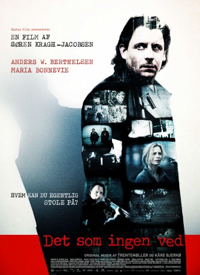
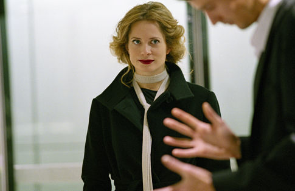
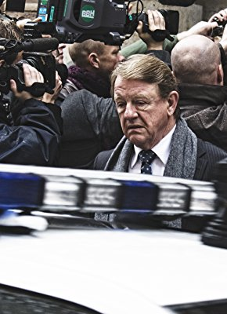

#10138 Was niemand weiß
 
 IMDB-Wertung: 6.2 / 10
IMDB-Wertung: 6.2 / 10  Metascore: 0
Metascore: 0 
In this political thriller, a young woman is found drowned on a winter night by the sea. The dead woman's brother, Thomas, discovers that her death is connected to their father, now deceased, and his work in military intelligence. As Thomas digs deeper into the case his family is brought into sudden danger.
Jahr: 2008
Dauer: 94 Minuten
FSK: 12
Land: Dänemark Studio: Pandora FilmproduktionTonspuren: DD5.1 - ,
Untertitel: Deutsch,
Auflösung: 720p (1280x548) Größe: 2795 MB
Genre: Thriller, Drama
Regisseur: Søren Kragh-Jacobsen
Drehbuch: Rasmus Heisterberg, Søren Kragh-Jacobsen, Søren Lassen
Soundtrack: Kaare Bjerkø, Anders Trentemøller
Darsteller:
-  Maria Bonnevie als Ursula
-  Henning Jensen als Lange-Erichsen
 Lars Mikkelsen als Marc Deleuran
Lars Mikkelsen als Marc Deleuran- Sarah Juel Werner als Bea
 Sonja Richter als Charlotte
Sonja Richter als Charlotte- Sarah Boberg als Amalie
- Kim Sønderholm als Tyrfing Agent
- Baard Owe als Hemmingsen
- Vibeke Hastrup als Fru Lange-Eriksen
- Rolf Jarl als Tyrfing Agent
- Alexander Karim als
- Amanda Ooms als
- Anders W. Berthelsen als Thomas Deleuran
 Ghita Nørby als Ingrid Deleuran
Ghita Nørby als Ingrid Deleuran- Marie Louise Wille als Marianne
- Jonas Schmidt als Claus Jensen
- Claus Gerving als Tyrfing Agent
- Torben Jensen als Tyrfing Agent
- Katherine Høj Andersen als Amalie
- Karl Bille als Lastvognchauffør
- Mette Gregersen als Liv
- Rebekka Owe als Margrethe
- Rita Angela als Ældre dame
- Christian Grønvall als Tjener
- Simon Munk als Young Thomas Deleuran
- Silja Amalie Bjerregaard als Statist (uncredited)
- Tine Bojanna Bjerregaard als Statist (uncredited)
 Johanna Brüel als Muslim woman (uncredited)
Johanna Brüel als Muslim woman (uncredited)- Henrik Jørgensen als Statist (uncredited)
Datei: X:\2008(N-Z)\Was niemand weiß (2008, FSK12, 1280x548).mkv seit 11.12.2018
Festplatte: HD 2008(G-Z)-2009(A-F)
 Es gibt insgesamt 91 Filme in der Gruppe '2008(N-Z)'
Es gibt insgesamt 91 Filme in der Gruppe '2008(N-Z)'